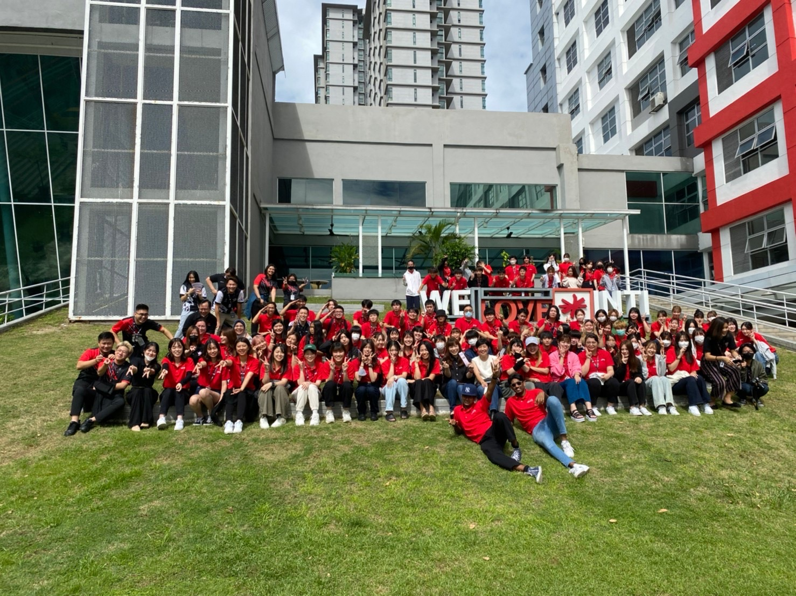
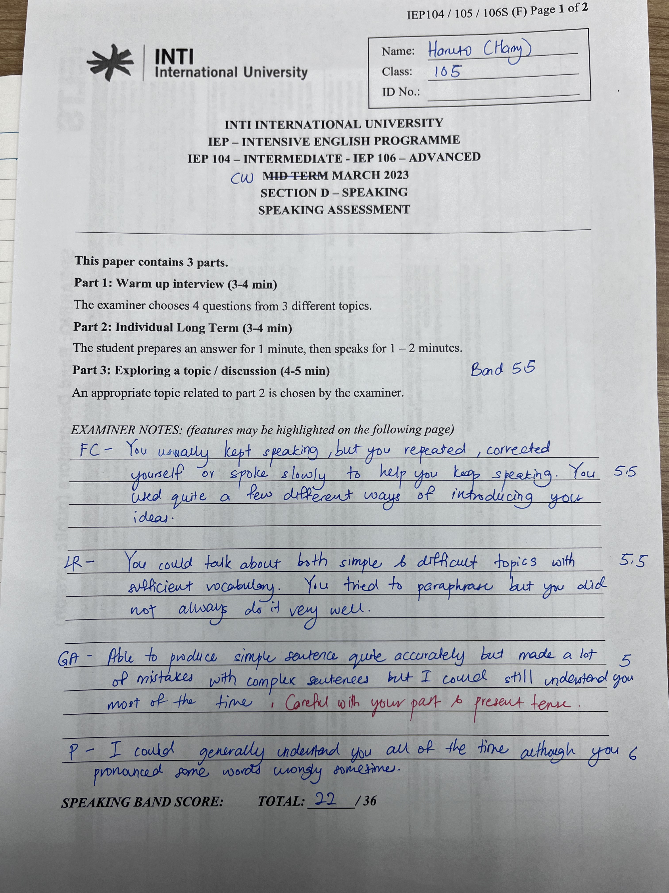
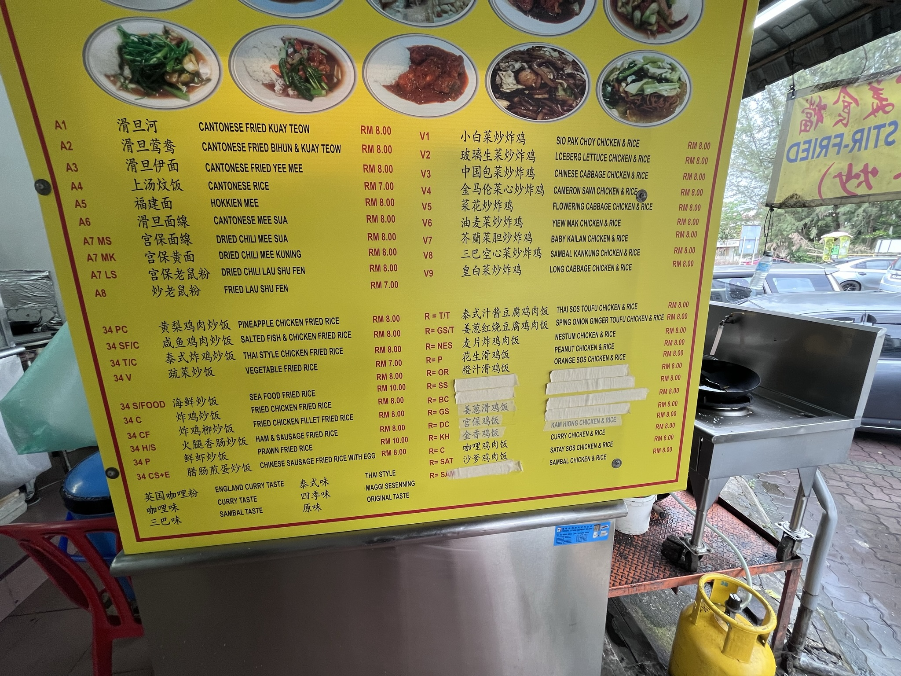
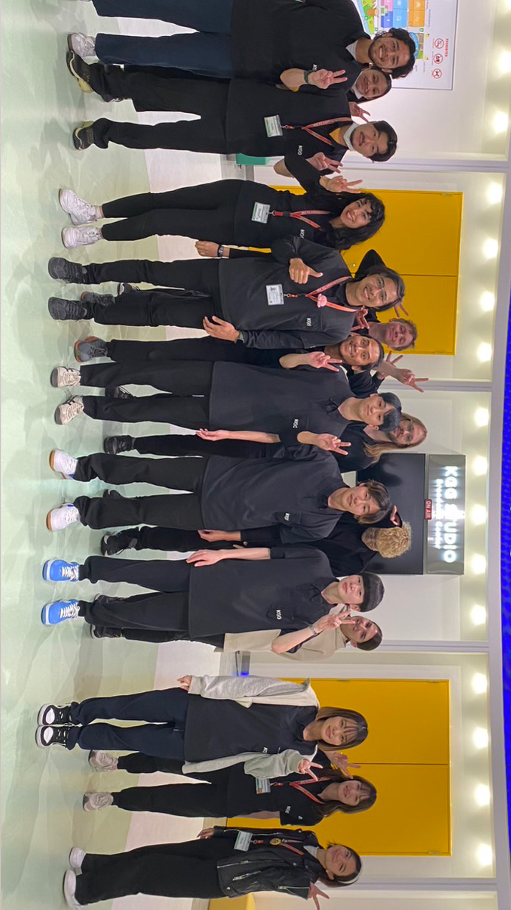
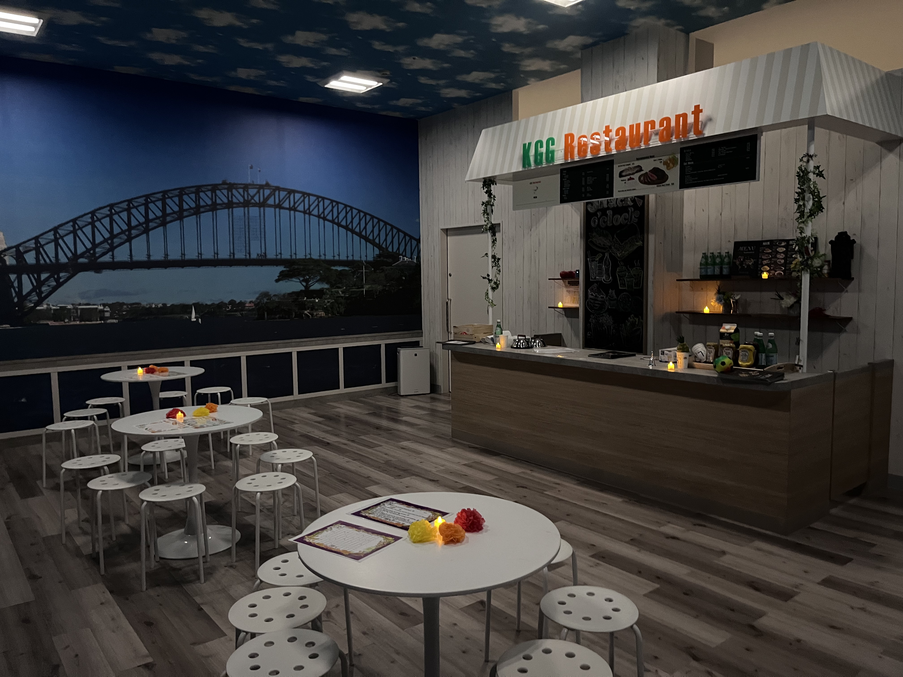
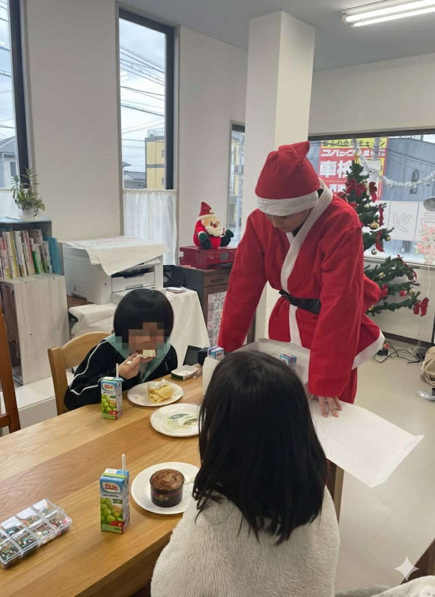

MY PROFILE
About me
- 名前: 浦川悠斗
- 年齢: 22歳
- 趣味: 英語学習、映画鑑賞、読書、旅行
Experiences
- 留学
- インターン
- アルバイト
Learning & Skills
学習中
- HTML
- CSS
- JavaScript
Next Steps
- Python
- Django
- React
Language
- 日本語
- 英語(B2レベル)
Philosophy
大学の論文では、「偶然」に見える出来事が、実は個人の無意識的な欲求が生み出す「潜在的選択」の結果ではないか、という考察をしています。
私にとって、Web開発との出会いもまさにそうでした。多くの情報の中からこの道が強く心に響いたのは、新しいキャリアを模索するという私の潜在的な欲求が、その「きっかけ」を捉えたからだと考えています。
この経験から、私は「目的 × きっかけ = 転機」という考えを大切にするようになりました。
日々の生活には無数のチャンスが転がっています。大切なのは、常に好奇心のアンテナを立て、行動を起こし続けること。そうすることで、一見すると偶然の出来事を、自らの人生を豊かにする必然的な転機へと変えることができると信じています。
Study Abroad Experience
大学一年後期から約一年間マレーシアの大学に留学していました
留学
→ 留学の詳細を見る留学中は主にIELTS対策のため4技能のクラスを受けていました
さらにオリエンテーション運営メンバーとして司会やキャンパスツアーの案内、留学生のサポートを担当しました



Internship Experience
大学二年の後期の間、二つの場所でサービスラーニングを経験しました。
サービスラーニング
→ サービスラーニングの詳細を見るKGG(北九州グローバルゲートウェイ)では参加者の誘導・外国人職員のサポート、プロジェクト運営（収益化）を担当。
塾ラッキーラボでは、教材作成や心理学の授業で学びました。




Seminar Experience
有限会社ANGEL COMPANYと協力し、会社のキャラクターの知名度を上げるための活動をしました